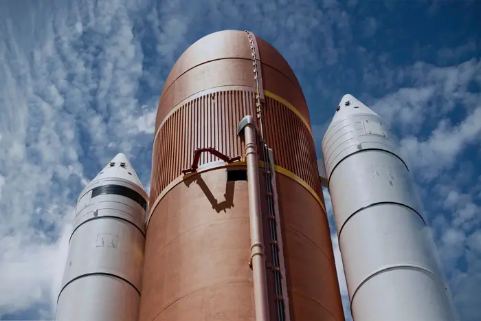

October 05, 2026
10 stories from today’s news cycle, aggregated and linked to original reporting.

Satellites show Earth lost more than 12 trillion tons of ice from Greenland, Antarctica in 47 years
Satellites show Earth lost more than 12 trillion t: nbcnews.com

Lawsuit says Anthropic, OpenAI, SpaceXAI and Google made illegal agreement on AI slowdown
<article> <h1>AI‑Slowdown Allegations: Fact‑Checking a Rumor and Examining the Antitrust Landscape</h1> <p>In

More than 400 schools in France to be closed on Monday as more protests
<h1>More than 400 schools in France to close on Monday amid renewed pension reform protests</h1> <p><em>By [Yo

Man who sprayed Minnesota Rep. Omar with vinegar sentenced to 14 months in prison
<h2>Vinegar Spray Incident Highlights Growing Threats to Politicians</h2> <p>On the morning of March 15, 2023,

Ukraine deploys FP-7 tactical ballistic missile in combat for first time, Zelenskiy says
<h1>Ukraine deploys FP‑7 tactical ballistic missile in combat for first time, Zelenskiy says</h1> <p>Ukraine r

Stocks advance after Bessent says talks with China were successful before Trump
<h1>Stocks surge after private investor Bessent claims China talks were successful ahead of Trump‑Xi summit</h

Scientists Detect Radio Signals from an Exoplanet for the First Time in History
A faint whisper from a distant world may have finally reached Earth. On 12 October 2026, the Square Kilometre

SpaceX’s supersized Starship launches into orbit for the first time but flight ends early
SpaceX’s Starship finally broke into orbit, marking the first time the world’s most ambitious reusable rocket

Private spacecraft falls back to Earth after failing to rescue aging NASA telescope
Private spacecraft falls back to Earth after faili: AP News

G7 to release 100 million barrels of oil and diesel, will it curb prices?
<h1>G7 to release 100 million barrels of oil and diesel? The reality behind the headlines</h1> <p>Last week th